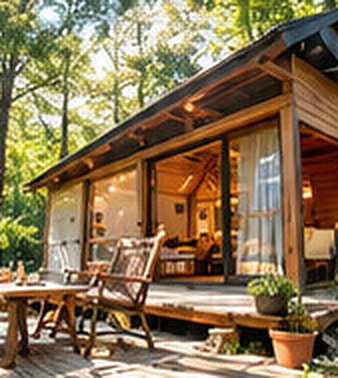

森のキャビン
壁と屋根と鍵がある、という安心。
場内に3棟ある、杉板張りの小屋です。はじめての外泊や、虫とはまだ距離を置きたい方に向いています。窓を開ければ鳥の声、デッキに出ればちゃんと森です。
室内はおよそ24㎡。一階にセミダブルのベッドが2台、はしごで上がるロフトに布団を2組敷けます。ロフトは天井が低いので、たいてい子どもたちの陣地になります。
- 定員
- 2〜4名（3棟）
- 広さ
- 室内 約24㎡ ＋ ウッドデッキ 約10㎡
- 寝るところ
- セミダブルベッド2台、ロフトに布団2組
- 室内に
- エアコン、洗面台、小さな冷蔵庫、電気ケトル、コンセント4口、ランタン2つ、ハンガー
- デッキに
- 焚き火台、テーブル、椅子4脚、屋根つきの軒下
- 営業
- 通年（冬も泊まれます）
暑さ寒さ、正直なところ
断熱した壁とエアコンがあるので、真夏も真冬もふつうに眠れます。ただしロフトは夏の夕方に熱がこもります。寝る1時間前から冷房を入れておくのがコツです。